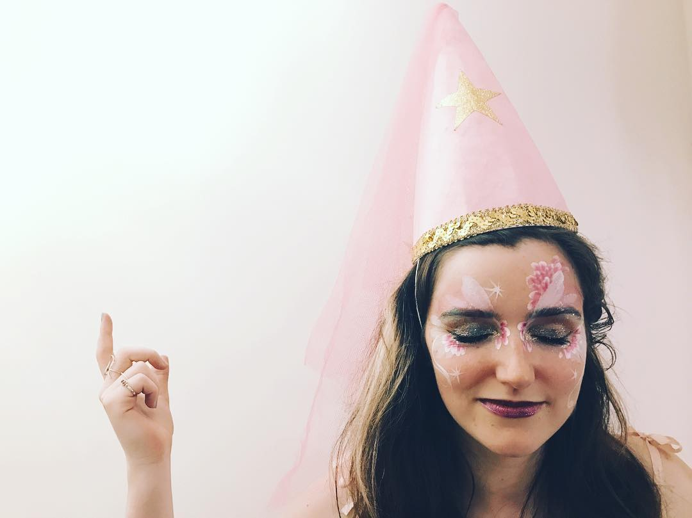

tutoring:
I spent my own GCSEs helping people with their maths questions on student forums instead of, you know, my own actual revision.
I caught a bug for teaching and haven’t stopped since!
I have experience in tutoring
- maths
- physics
- biology
- chemistry
- coding
- English
and also
- revision techniques
- STEM interviews
- Oxbridge interviews and admissions tests
- mentoring
- touch typing
I collaborate with my scholars with a focus on:
building their confidence so they attempt questions that seem
intimidating; using storytelling to imprint key concepts; demonstrating
how to break down problems into their smaller, easier, solveable parts.
"I'm not sure"
Building confidence means students will have a go even if they are not sure it is the right answer. Simply making a start might open up the problem and even gain them some marks. Mistakes are the best way to learn after all. If a student is not making mistakes, they are either too afraid to get a question wrong or the material is not difficult enough to push them.
"I don't know"
The ability to admit not knowing can be a brave act. It leads to questions - there is no such thing as a silly question! Asking questions demonstrates engagement and curiosity.
"What's the point of learning this anyway?!"
I aim to provide a context for the material so it has a relevance for my scholars. At the very least, some of the more abstract topics expand their ways of thinking.
"How do you know?"
I ensure my scholars have an understanding of the first principles so they can derive and understand the concept themselves. Curiosity is best with a healthy dose of scepticism. Questioning how or why we know something will improve their understanding.
I have experience with neurodivergent kids: ADHD, dyslexia, dyspraxia, and autism
